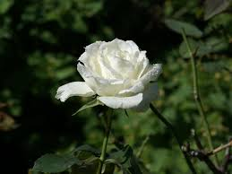
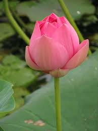

-
MAECENAS LUCTUS

Rose is a woody perennial of the genus Rosa, within the family Rosaceae. There are over 100 species. They form a group of plants that can be erect shrubs, climbing or trailing with stems that are often armed with sharp prickles
Read more -
FUSCE FRINGILLA
Nelumbo nucifera known by numerous common names including Indian lotus, sacred lotus, bean of India, or simply lotus, is one of two species of aquatic plant in the family Nelumbonaceae.This plant is an aquatic perennial.
Read more -
PRAESENT MATTIS

The genus is one of many in the Asteraceae that are known as sunflowers. Some species also have additional shorter scales in the pappus, and there is one species that lacks a pappus entirely.
Read more